Duration
Feb - May 2021 (3 months)
Type
Type: GBA (32-bit handheld console, 240 × 160 px)
Language
C
Tools
Usenti, VisualBoyAdvance, Audacity, Pixilart, Visual Studio Code
As part of my Media Device Architectures course at Georgia Tech, I programmed five arcade-style games for the Game Boy Advance (GBA), including one original game. This was a unique experience using an older gaming platform, where I learned to work with GBA's hardware architecture, to deal with limited memory, and how it all works from the zeros and the ones.
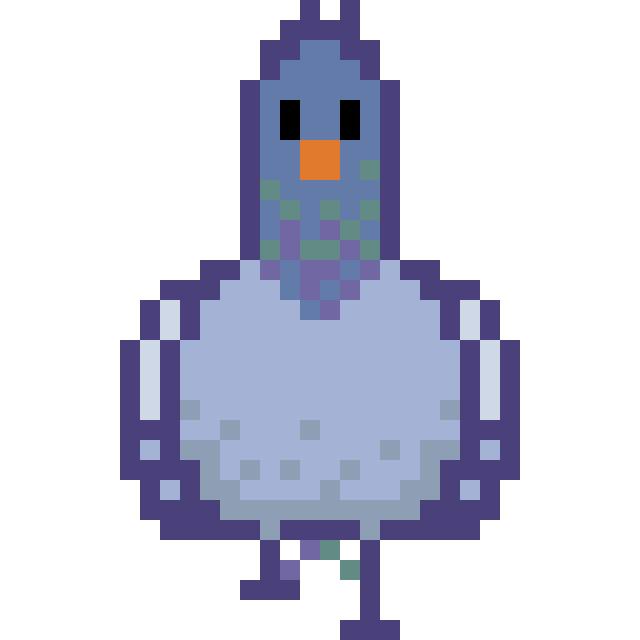In my original game, Let's Get This Bread, players help a hungry pigeon collect coins through various minigames to purchase bread (and not starve).
The pigeon starts out on a bare home lawn, equipped with 50% health and 0 coins. As the player plays more games and collects more coins, they can decorate the lawn with flowers from the shop.
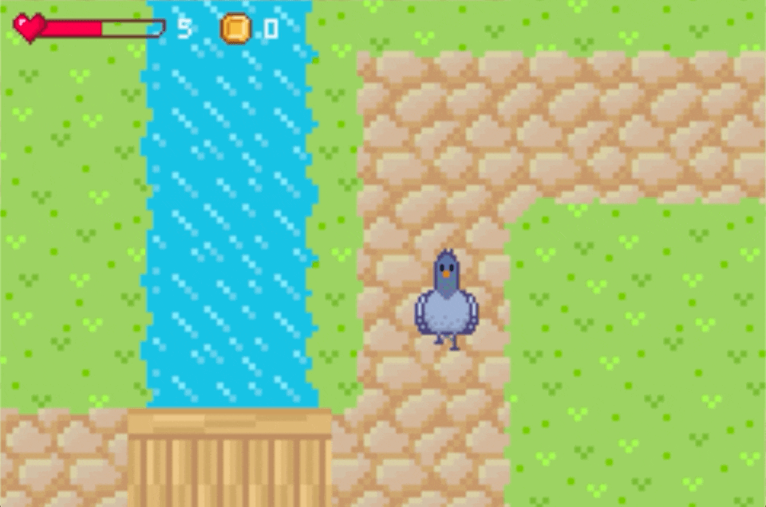A simple jumping game where the pigeon tries to collect coins and avoid bombs. The pigeon loses one health point when the game ends.
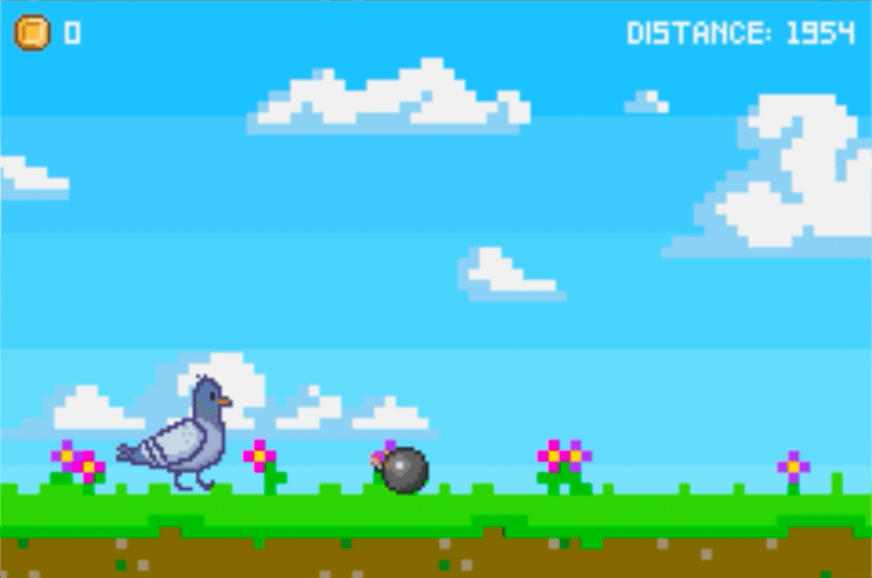A tile matching game, but with a twist. Flip two cards of the same color, and the pigeon collects a coin. Flip two "bomb" cards, and the game ends immediately.
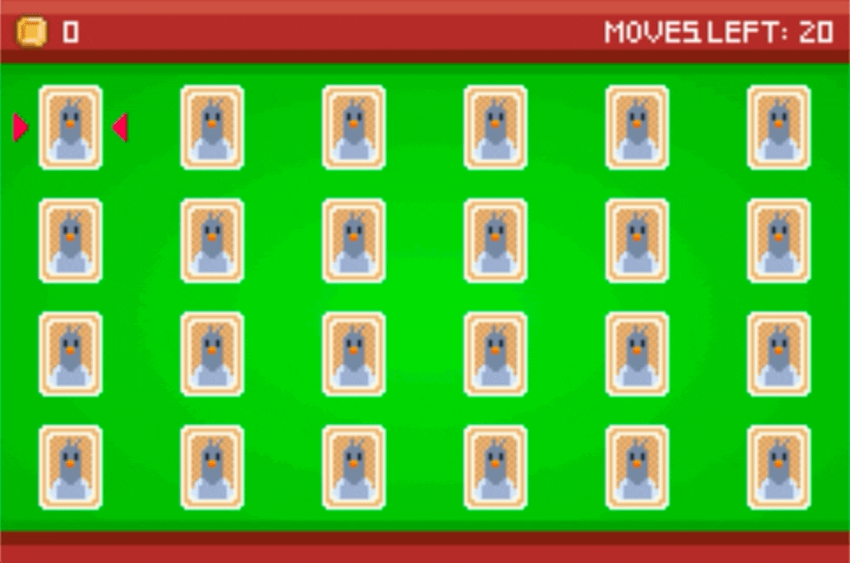This is where players can buy bread to increase their health and buy flowers to spruce up their home lawn.
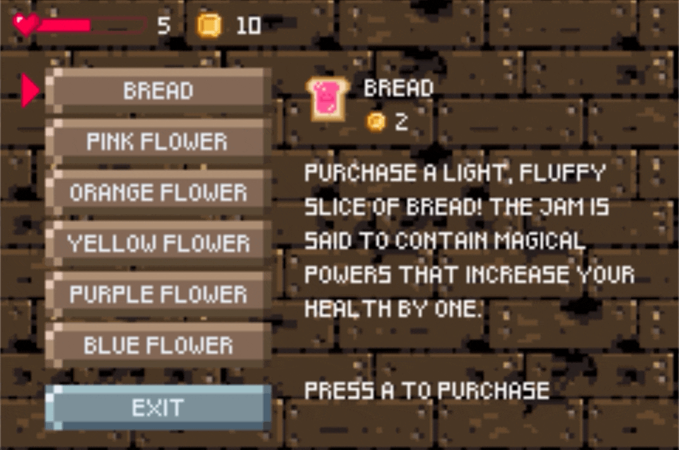With a secret configuration of button clicks and five coins, players can try to unlock a cheat that grants them unlimited health and perks in the minigames.
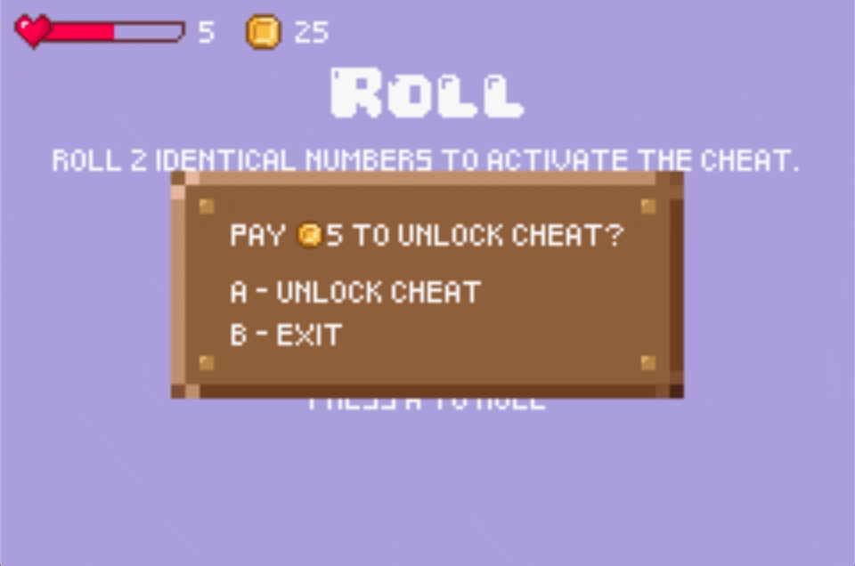I began the brainstorming and planning process for this game with some sketches and a write-up of my proposed gameplay, where I solidified my plans for the premise of the game.
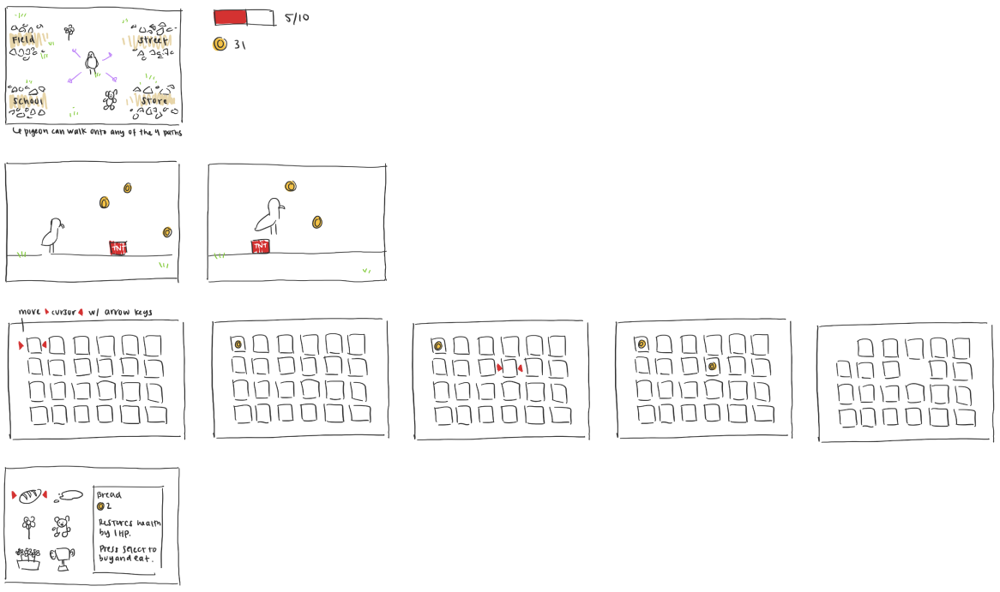Working in milestones, I first added in the transition screens, home screen, and minigame screens, and incorporated general movement and controls. I then developed the gameplay for each level and added in the store. Lastly, I integrated art, music and sounds, and the cheat feature. At each phase, I received feedback from my teaching assistant on improvements I could make.
For the game’s art, I drew some of it myself, such as most of the sprites (characters and objects) below, while I took the rest from online, touched them up, and converted them for the GBA.
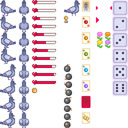Before working on Lets Get This Bread, I also recreated four popular arcade games to practice developing for the GBA.
The classic; stack blocks together to form complete rows!
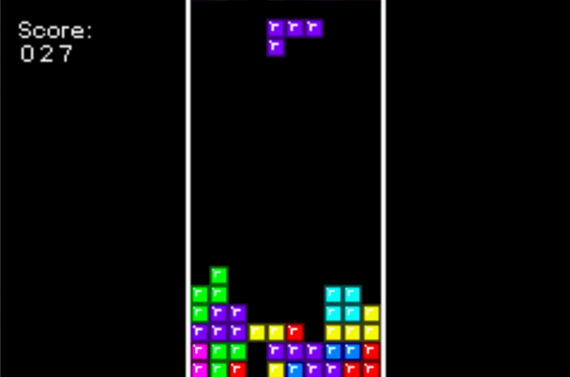Get the frog across a busy road without bumping into any cars.
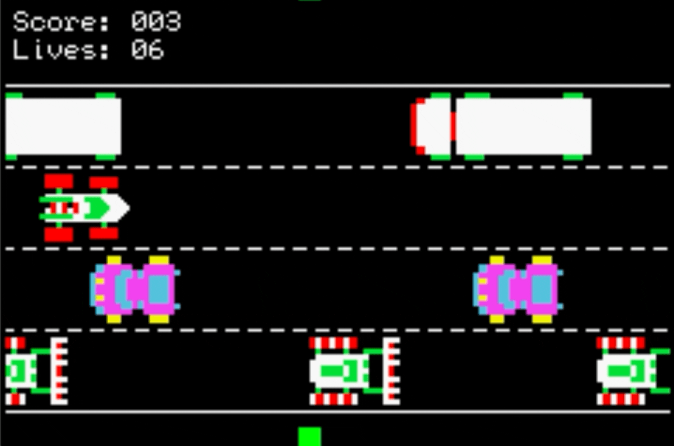Navigate the cursor to destroy missiles before they hit the ground.
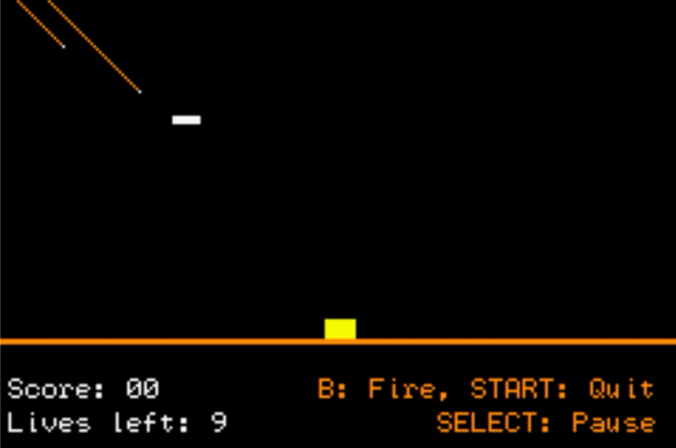Ping pong, but in pixels.
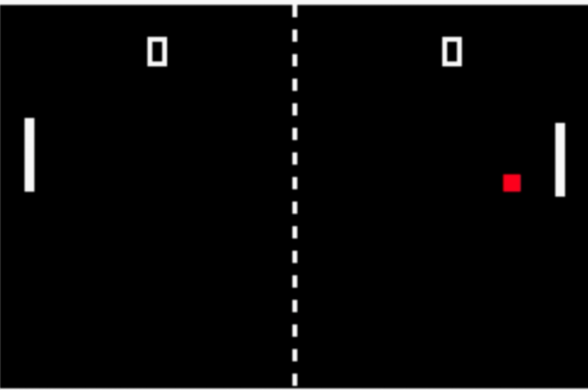Programming these games was a gratifying challenge, and I was really pleased with what I was able to accomplish during the three months. Because of the nature of the GBA, these projects were fairly technically focused. I learned to deal with
Working with these technical limitations helped me appreciate all the advanced tools and frameworks we have for developing games today. Using outdated programs and tools that weren't made specifically for games encouraged me to work through logic and understand how computers work on a deeper level. These efforts made the projects all the more rewarding to complete.
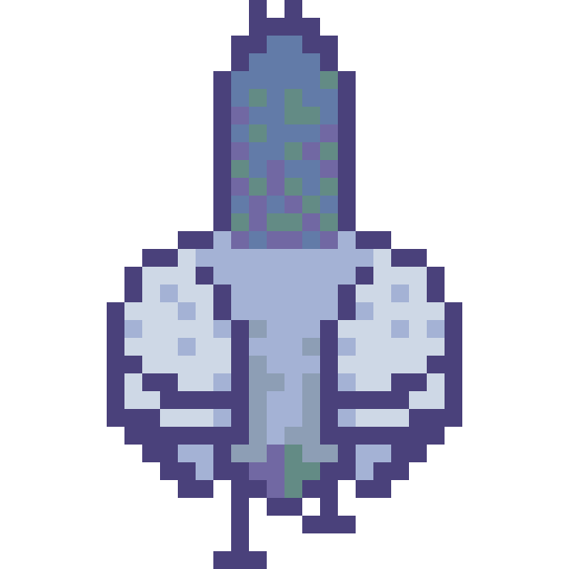Let's get in touch!